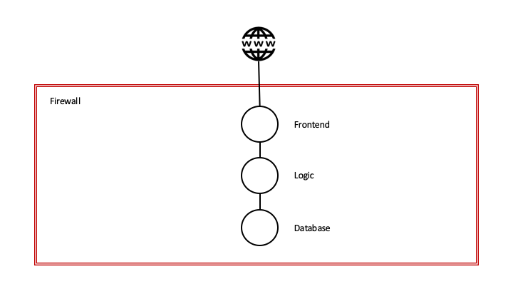
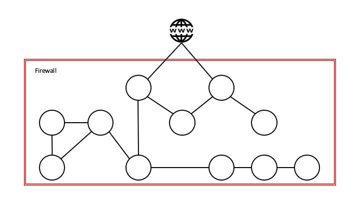
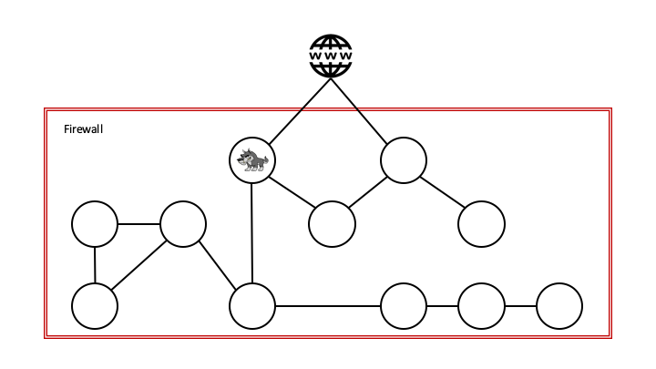
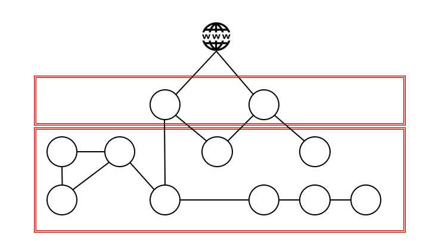
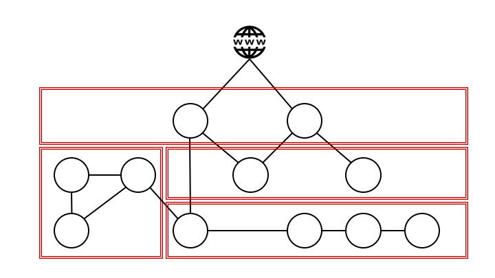
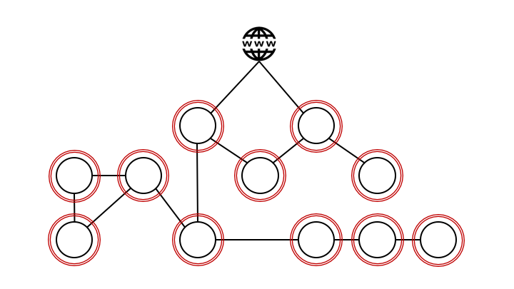
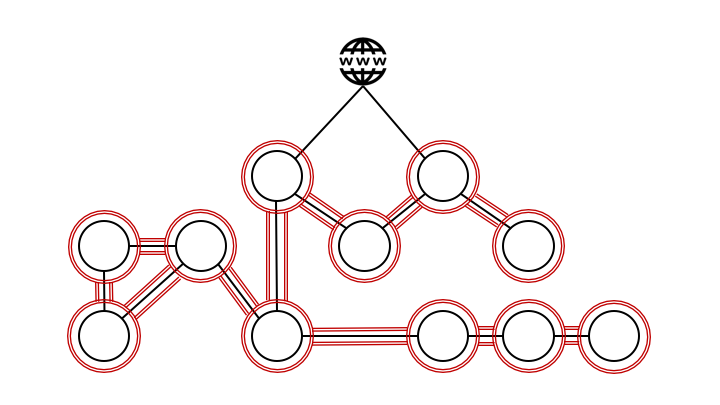

Zero-Trust Network Architecture§
Firewalls and zones have been our primary defense mechanism for years. With this model we have defined a perimeter around our applications; keeping potential attackers on the inside, and to have control of what our applications are able to communicate with on the outside.

The challenge with this model in a containerized world is that our application portfolio has become more distributed, which leaves us with more components and attack vectors.

Additionally, the attack methods have become more sophisticated. Our safety planning and solutions must be able to address the following: What happens if an attacker is able to breach our perimeter?

Since our application's architecture is based primarily on an outer defense layer, it would be a relatively simple task for an attacker that is already on the inside to compromise other applications within the same perimeter. Most applications have implemented further safety mechanisms, but those who rely solely on the safety perimeter are extremely vulnerable.
This problem is addressed using network segmentation; applications with the same safety level and affiliation are grouped together behind separate firewalls.

The challenge remains the same, though; a compromised application could mean a compromised zone.
The next level of security using this methodology is micro-segmentation and a zone model where applications and services are grouped in even smaller and more specific zones, givig a potential attacker an even smaller attack surface given a successful attack.

Continuing this methodology, the inevitable conclusion will be a perimeter around each individual application.

Once each application has its own perimeter, the next thing to address is:
- What if the network itself is compromised?
- Are there attackers on the inside that can listen to, or spoof traffic?
This is the case on unsafe networks, like the Internet, but here other safety mechanisms are being used ensuring that sensitive information like bank and health data can be transferred. It is no longer a safe assumption that there are no attackers in our own data centers, our private cloud or in the public cloud, so we have to implement mechanisms to secure the communication between our applications even here.

We need to base our transportation security on authentication and authorization between all services, so that we can be cryptographically certain that both the sender and the receiver are who they claim they are. Each endpoint is given a cryptographic identity in form of a certificate proving their identity. This gives us the ability to make policies and control service to service communication based on identity.